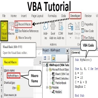

**VBA**
What does VBA stand for? VBA stands for Visual Basic for Applications. It is a language used for programming tasks and actions in Excel, Access or developing additional functions in Excel worksheets that are customised to your work needs. VBA is great for automating actions – saving time by performing programmed actions time and time again. So you don’t have to set things up from scratch each time.
For example, if you are at an intermediate level, you can use macros without opting for the use of VBA. However, understanding and using VBA gives you more flexibility to set up Excel to act on commands that may be too complex to be recorded in a macro. In this situation, VBA is suited to more advanced users of Excel.
Uses for VBA in the work environment
For those users who can apply VBA, it can make life easier for us who are still developing our skills. Automating procedures – for example, a monthly summary report can be set up using VBA – so you can press a button and the report is generated (conducting all the different actions so you don’t have to). Speeding up work by using VBA macro to automate repetitive actions – if you find yourself completing the same action over a number of Excel workbooks, consider that VBA could save you lots of time, by automating the action.
Customise Excel so that anyone in the organisation can use it. If, like me, you aren’t using VBA yet, it is a breath of fresh air if someone can sets up commands and functions so I can just get on with my work. So no matter whether the staff member is using Excel everyday, or infrequently, VBA is key to speeding up work and cutting out inaccuracies for everyone in the organisation.
A complete VBA training (5 weeks) will cost you only $200 if you do not qualify for aid.
Back to Top